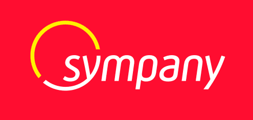
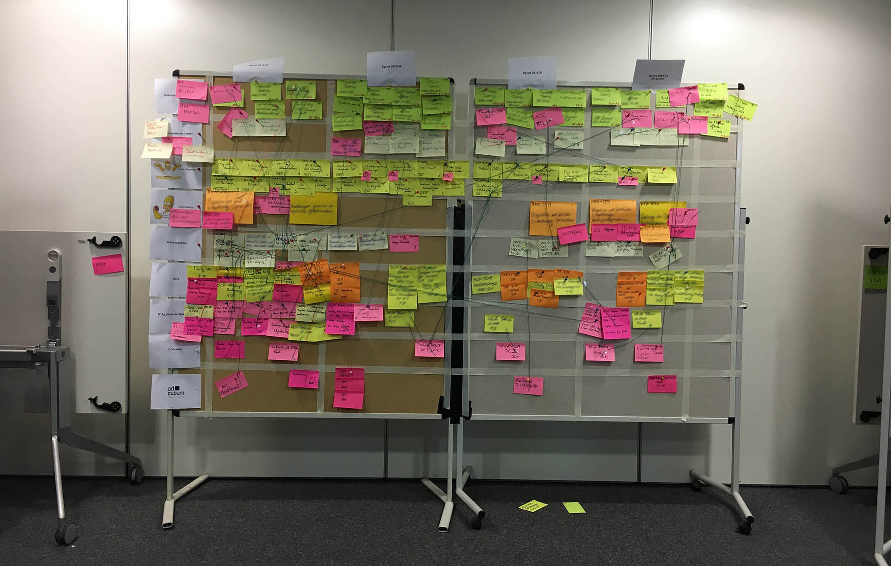

Métamorphoser le processus
Métamorphoser le processus
de décision grâce à SAFe
-
Julian GERSTACKER Agile Transformation Manager
chez Sympany
Julian GERSTACKER
Agile Transformation Manager
chez Sympany
Fondée à Bâle il y a une centaine d’années, Sympany est une compagnie d'assurance incontournable en Suisse alémanique et en Allemagne. La société propose un large éventail de couvertures dans les domaines de la santé, de l’automobile, de l’habitation et de la responsabilité civile. Le groupe compte environ 500 employés et gère 260 000 contrats qui représentent un volume de primes d’assurance de plus d’un milliard de francs suisses par an.
Depuis deux ans, pour faire évoluer sa culture d’entreprise, Sympany a amorcé une véritable révolution organisationnelle en introduisant SAFe (Scaled Agile Framework), le plus populaire des frameworks d’Agilité à l’échelle. L’objectif est de briser les silos entre les différents départements afin de faire émerger une compréhension commune des enjeux stratégiques. Julian Gerstacker pilote ce projet depuis le premier jour.
Cette transformation Agile est capitale car elle doit fournir au groupe centenaire les moyens d’assurer sa pérennité et de définitivement réussir son passage dans le 21ème siècle. “Récemment, de nombreuses startups se sont lancées avec pour vision de révolutionner l’expérience client sur le marché de l’assurance. Il devenait essentiel pour Sympany d’adopter un mode de fonctionnement plus flexible pour s’adapter aux nouveaux enjeux de l’industrie et, à terme, revenir à la pointe de l’innovation sur ce marché,” souligne Julian.
Avant que la pandémie ne bouleverse les habitudes de travail, une dizaine d’équipes de réalisation, organisées en Scrum ou en Kanban, avaient pris l'habitude de se retrouver, toutes les dix semaines, pour une session de PI Planning de deux jours. Celle-ci se déroulait généralement dans la grande salle de conférence d’un hôtel. Ainsi, en comptant quelques parties prenantes et managers clés, près de 80 personnes étaient amenées à collaborer, partager leurs idées et placer des post-it sur tous les murs de la salle. Un côté entier du lieu était d’ailleurs dédié à la construction du Program Board.
Tout fut remis en cause lorsque les mesures de confinement furent imposées et les collaborateurs de Sympany contraints de travailler depuis leur domicile. Après avoir testé, sans succès, un addon Jira pour construire un Program Board virtuel, Julian répliqua un véritable PI Planning Board virtuel sur Draft, celui-ci incluant un ordre du jour, un Program Board et une matrice ROAM de gestion des risques. Couplé aux fonctionnalités de visioconférence de Microsoft Teams, la collaboration trouvait désormais son prolongement naturel dans le monde virtuel.
Selon Julian, la mise en oeuvre de SAFe a d’ores et déjà métamorphosé la capacité des équipes à collaborer efficacement, et ce, même à distance : “Le PI Planning nous a forcés à définir des objectifs plus explicites, ce qui a mis en évidence les problèmes organisationnels et favorisé la responsabilisation des équipes quant à l’atteinte des résultats.” En complément de Draft, Julian documente tout le processus dans Confluence, incrément après incrément, afin de conserver la trace de toutes les prises de décision et identifier aisément les éventuels écarts par rapport au plan.
Entre chaque PI Planning, en plus des cérémonies habituelles des frameworks Scrum ou Kanban, Julian a mis en place un processus sur-mesure dans le but d’offrir aux équipes davantage d’opportunités pour se coordonner et de permettre à chacun de s’imprégner des enjeux stratégiques du groupe. Ce processus s’articule autour de trois sessions de collaboration bihebdomadaires :
Du point de vue de Julian, la distance a, en partie, affecté la flexibilité et la spontanéité dans la communication entre équipes. Par ailleurs, il existe un risque que le sentiment d’appartenance à l’ensemble du programme s’étiole si la situation perdure. Néanmoins, les bénéfices l’emportent sur les inconvénients. Maintenant, il peut documenter le PI Planning de façon plus complète, ce qui permet à tous les participants de conserver une vision claire des actions décidées au cours de ces réunions, et des raisons pour lesquelles elles ont été décidées.
Par ailleurs, en ayant la possibilité de partager l’ensemble des supports de réflexion et de prise de décision au management et aux parties prenantes extérieures au programme, Julian a le sentiment d’être devenu un acteur à part entière de la stratégie d’entreprise. Et non plus le post-it guy, ce qui pouvait être la perception de son rôle par certains managers au début de la transformation Agile.
Draft permet finalement de remplacer les lieux traditionnels de créativité, souvent très onéreux à aménager et meubler, tout en favorisant des méthodes innovantes de travail et de collaboration. Julian le résume ainsi avec enthousiasme : “Tout le monde peut désormais être créatif chez soi !”
“Afin que tous les collaborateurs aient l’opportunité de faire émerger des idées novatrices, je souhaite insuffler la philosophie Agile dans toutes les strates de l’organisation", clame Julien, tout en ayant bien conscience du challenge que cela représente dans une entreprise suisse-allemande à culture plutôt hiérarchique.
Outre le déploiement des valeurs Agiles, Julian souhaite utiliser Draft pour contourner les limites de Jira en matière de management visuel : “Je vais aider les équipes à construire leur propre artefact de management visuel, en particulier des Kanban boards sur-mesure pleinement adaptés à leur workflow.”